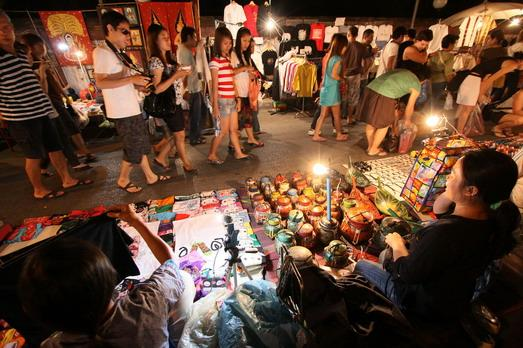

Category
สถานที่ท่องเที่ยวทางธรรมชาติ
แหล่งท่องเที่ยวทางธรรมชาติที่สวยงาม เหมาะแก่การพักผ่อนหย่อนใจ ที่รอให้คุณได้มาสัมผัสด้วยตนเองสักครั้งในชีวิต รับรองว่าคุณจะต้องประทับใจจนลืมไม่ลงอย่างแน่นอน
ดูเพิ่มเติม...
วัดและพิพิธภัณฑ์
สถาปัตยกรรมทางพระพุทธศาสนาสุดตระการตา แหล่งรวมวัฒนธรรมแห่งเชียงราย หากคุณได้มาเยือน รับรองว่าจะต้องอิ่มบุญและอิ่มใจอย่างแน่นอน

แหล่งชอปปิ้ง
แหล่งช้อปปิ้งสุดจี๊ด ที่มีสินค้าหลากหลายทั้งสิ้นค้าพื้นเมืองและสินค้าแปลกใหม่ ราคาถูก คุณภาพดี เหมาะแก่การซื้อติดไม้ติดมือไปเป็นของฝาก มีหลากหลายสถานที่ให้คุณได้เลือกสรรอย่างจุใจ
ดูเพิ่มเติม...